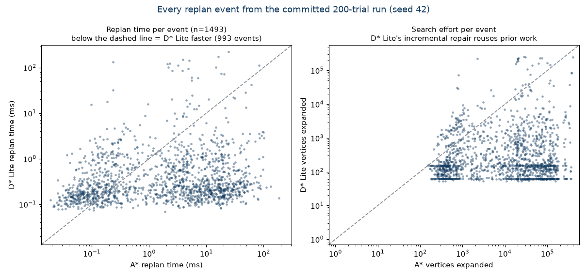

Planning paths that survive a changing world
Two global planner plugins for ROS2 Nav2, written in modern C++20: classic A* and incremental D* Lite, benchmarked head-to-head on the event that matters - an obstacle lands on the route and the planner must recover.
The problem
Warehouses, hospitals, and homes never hold still. A robot plans a route, someone steps into it, and the plan is suddenly wrong. Classic A* handles this by throwing everything away and searching again from scratch, which costs processing spikes exactly when smoothness matters most. D* Lite takes the other road: it repairs the existing plan incrementally, reusing everything the previous search already learned.
This project turns that textbook comparison into running code: a ROS-free C++20 planning core with Nav2 plugin adapters, and a benchmark that settles the question with numbers a stranger can reproduce - the per-event data, the seed, and the code that produced them are committed together, and CI re-runs the tests and a benchmark smoke pass on every push.
Getting D* Lite actually correct was the hard part: its priority keys routinely tie between vertices, and floating-point rounding of mathematically equal keys can bury a vertex the algorithm must expand, freezing stale state into the path. The fix is an exact integer cost metric - every g, rhs, and key an integer, every comparison exact - validated by 185,237 fuzzed incremental replans that must match a reference Dijkstra to the unit.
What the planner sees


The results


What makes the comparison fair: both planners face byte-identical scenarios, obstacles are injected on the current path so the change always matters, measurement order alternates to cancel cache effects, and both planners optimize the same exact cost metric - so the zero cost-mismatch count means the race is between two provably optimal planners. The honest trade-off is stated with the win: D* Lite pays a ~2.7x costlier initial search and loses trivial replans; it dominates exactly where CPU spikes hurt a real robot.
Under the hood
- ROS-free C++20 planning core; A* and D* Lite (Koenig & Likhachev, persistent search state, correct km accumulation)
- Exact integer cost metric - the fix for D* Lite's floating-point key-tie failure mode
- Tests validate both planners against reference Dijkstra with exact equality; the incrementality property itself is asserted in CI
- Nav2 global planner plugins over the tested core; build-verified against ROS2 Humble in CI
- Every figure on this page rendered from committed run data by a committed script